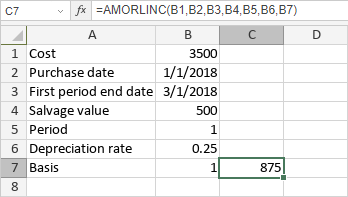

AMORLINC funkcija
Funkcija AMORLINC je jedna od finansijskih funkcija. Koristi se za izračunavanje amortizacije sredstva za svaki obračunski period korišćenjem linearne metode amortizacije.
Sintaksa
AMORLINC(cost, date_purchased, first_period, salvage, period, rate, [basis])
Funkcija AMORLINC ima sledeće argumente:
| Argument | Opis |
|---|---|
| cost | Trošak sredstva. |
| date_purchased | Datum kada je sredstvo kupljeno. |
| first_period | Datum kada se završava prvi period. |
| salvage | Ostatna vrednost sredstva na kraju njegovog veka trajanja. |
| period | Period za koji želite da izračunate amortizaciju. |
| rate | Stopa amortizacije. |
| basis | Osnova za obračun broja dana koja će se koristiti, numerička vrednost veća ili jednaka 0, ali manja ili jednaka 4. To je opciono argument. Moguće vrednosti su navedene u tabeli ispod. |
Argument basis može biti jedan od sledećih:
| Numerička vrednost | Osnova obračuna |
|---|---|
| 0 | US (NASD) 30/360 |
| 1 | Stvarno/stvarno |
| 2 | Stvarno/360 |
| 3 | Stvarno/365 |
| 4 | Evropski 30/360 |
Napomene
Datumi moraju biti uneti korišćenjem funkcije DATE.
Kako primeniti funkciju AMORLINC.
Primeri
Slika ispod prikazuje rezultat koji vraća funkcija AMORLINC.
